Review 1 - A Taste of Malaysia at Urban Hawker, New York
As a Malaysian studying abroad here in the United States, I definitely crave some Malaysian food sometimes. I visited Urban Hawker located on 50th Street in New York a few months after it was opened. You may find a variety of culinary dishes to choose from, offering a taste of Singaporean and other Asian flavors all in this one food hall. Most Malaysian and Singaporean food are quite similar with some difference in ingredients and way of making some dishes. Among all the different stalls that were available there, I tried Padi D’NYC as it stood out the most to me, offering dishes that were really similar to what I have back home in Malaysia and even one of the chefs was a Malaysian too!
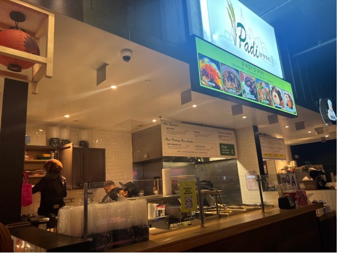Padi D’NYC vendor, Urban Hawker
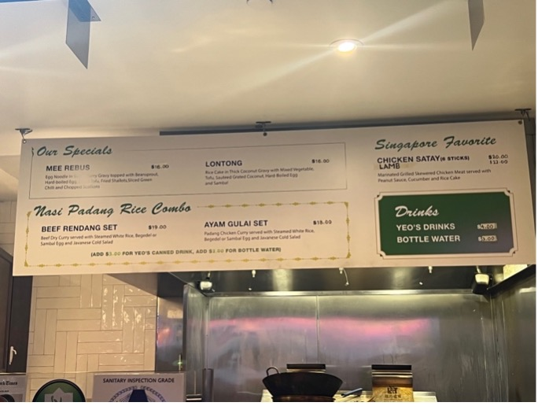Padi D’NYC Menu
I ordered the Beef Rendang Set (Beef dry curry served with white rice, boiled egg and Javanese salad) and the lamb satay (lamb skewers with peanut sauce, onions, cucumbers and rice cakes). I really enjoyed the Beef Rendang, it was full of flavor and it tastes exactly like how it is made in Malaysia. The beef was really tender and the rendang (dry/thickened curry that doesn’t have much broth) was savory with a bit of spiciness in it and I think it’s perfect for people with a low spice tolerance. The lamb satay was a bit dry and lack some seasoning but peanut sauce and rice cake (also called ketupat in Malay) was really good and tastes authentic! Overall, I think the food is a bit pricy, but it is definitely worth it if you would like to try some authentic Malaysian/Singaporean dishes. If you’re looking for curry that is brothier, they also have Ayam Gulai Set (Chicken curry set) and a vegetarian curry option, Lontang (rice cakes in coconut curry with vegetables and tofu).
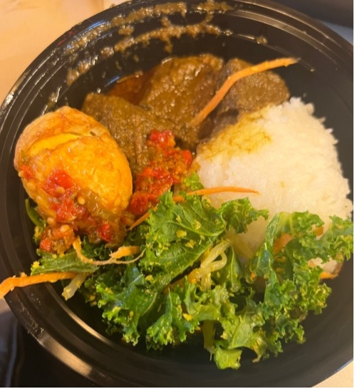Beef Rendang Set ($19.00)
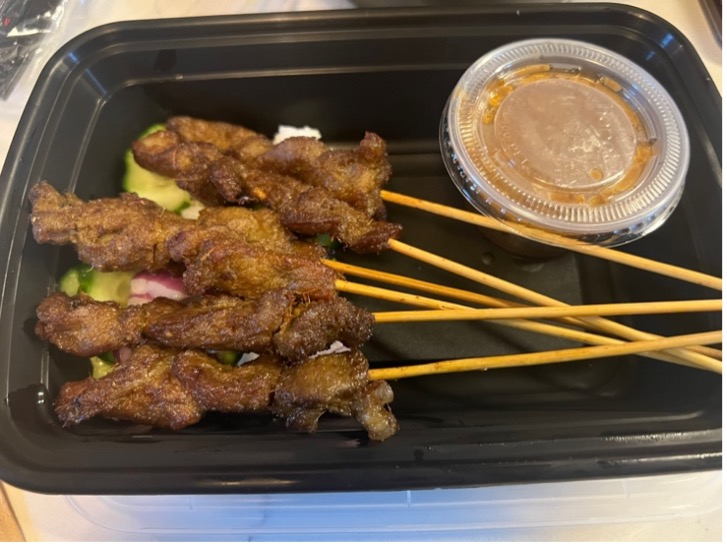Lamb Satay, 6 sticks ($22.00)
As for drinks, I had Teh Tarik (directly translated to “pulled tea”) from Kopifellas. The Teh Tarik is a must try here at Urban Hawker! The Teh Tarik is a popular drink in Malaysia especially in Mamak stalls (roadside stall/restaurants that sells Muslim Tamil/ Malay cuisine). The drink is made of brewed black tea mixed with condensed milk and it’s the process of mixing it that makes it special. The drink is repeatedly poured back and forth from one container to another (can be called as “pulling”) mixing the drink, cooling it and giving it a frothy head. It’s best to drink it while its warm and many would usually say that it tastes similar to milk tea except it has a creamier and richer taste, so if you’re a fan of milk tea definitely give the Teh Tarik a try! Kopifellas’ Teh Tarik really hits the spot as it tastes exactly how its supposed to be. Besides that, Kopifellas also serve a variety of traditional Malaysian/Singaporean drinks like Kopi O, black coffee with just sugar without milk, or Teh O, sweetened tea without milk, if you’re more interested in drinks that’s slightly bitter or less sweet.
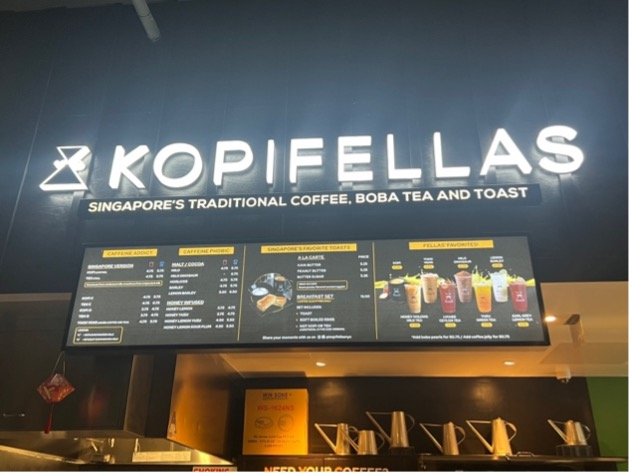Kopifellas’ vendor, Urban Hawker
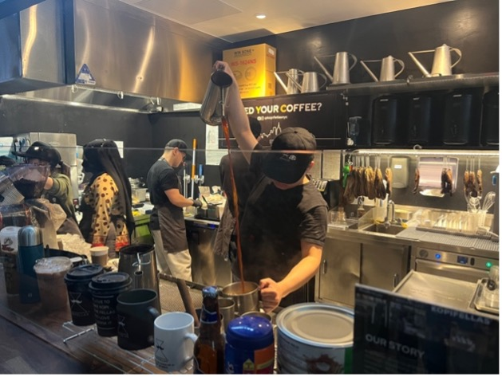Teh Tarik’s ($5.75) ‘pulling’ process
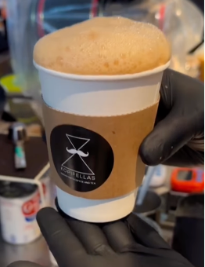Teh Tarik (Source: @urbanhawker Instagram)
Lastly, desserts! The durian serimuka kuih from Lady Wong is also a must! The durian serimuka is type of kuih (bite-sized snack/dessert) that is made of coconut glutinous rice (usually colored blue) topped with some durian custard. This is a variation of the actual traditional way of eating it back in Malaysia, we usually have the blue coconut glutinous rice plain dipped with either kaya, a sweet coconut and pandan leaf jam, or topped with pandan custard instead of durian. The coconut glutinous rice has a sticky texture that was chewy and sweet and the durian custard complements the stickiness with a sweet, creamy and smooth topping. There were also bits of durian pieces in the custard. Durian being a local delicacy in Malaysia due to its rich and distinctive taste, I find the fruit to have a strong pleasant and sweet smell but it is also quite popular among foreigners to have a strong stench similar to the sewers or garbage. If you’ve never had durian before, be warned when trying this version of serimuka as it might smell/taste either really good or really bad to you. However, I’d recommend trying the durian serimuka if you’d like to get a taste of what the durian fruit is like as I personally think the smell and taste of durian was very subtle and it is perfect for one to try a taste of the King of Fruits. If you’re not looking to take risks or having to worry about the smell, an alternative to this kuih is the pandan or ube serimuka kuih that they also offer where the durian custard is replaced with either a pandan or ube (purple yam) custard.
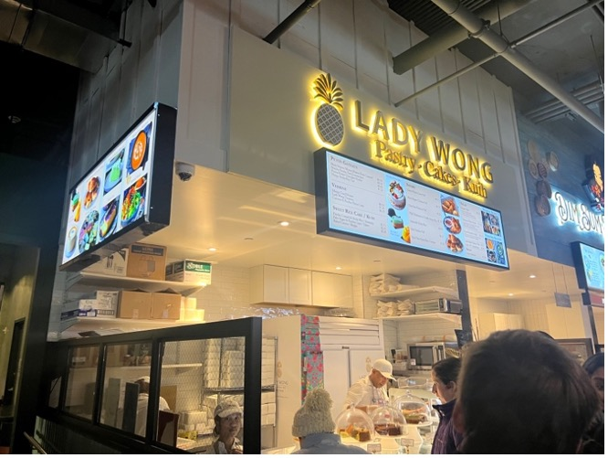Lady Wong vendor, Urban Hawker
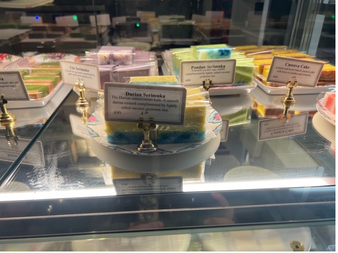 In front - Durian serimuka ($4.85)
Back left - Ube serimuka (purple)
Back right - pandan serimuka (green)
As for the environment, it has a modern setup of how hawker stalls are set up in Malaysia/Singapore where the seating and tables are located in the center with a variety of vendors surrounding you offering different culinary dishes, desserts and drinks you can order from. As you walk into the place, you can smell all the aromatic and flavor scents floating through the air, creating an enticing and immersive dining atmosphere similar to what you would experience dining at a local hawker in Malaysia and Singapore! You’re free to order from whichever vendor you like and sit at whichever available seating there is, this is perfect for families and friends as this flexibility allows each individual/group to explore the diverse culinary offerings at your own pace, catering to the varying preferences and dietary needs of each person. Some other vendors that also offer Malaysian like dishes are, Mamak’s Corner – mostly Indian dishes, like Briyani and also Roti Canai (a common Malaysian fried dough breakfast) Hainan Jones – poached, roasted and fried chicken rice with some noodle options.
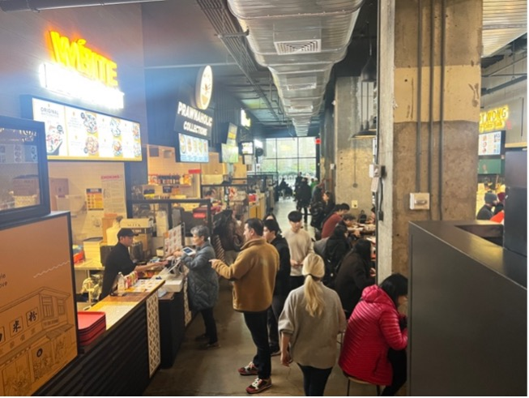Variety of vendors on both sides when entering Urban Hawker
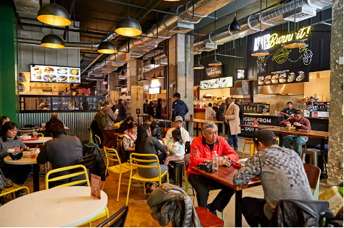Center seating area with vendors surrounding it.(Source: Rachel Vanni for NYT)